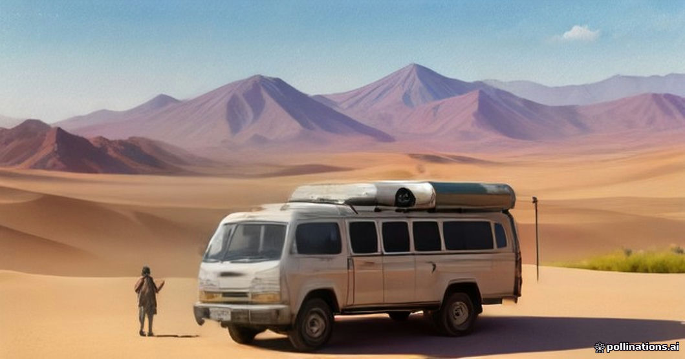

Traveling to Erg Chebbi across the High Atlas or Middle Atlas with three generations in one vehicle brings distinct rewards, but it breaks standard tour formulas. Grandparents need predictable legroom and regular stretch breaks; toddlers need reliable bathroom access; teenagers want quad bikes and active dune sports. Squeezing Marrakesh to Merzouga and back into a standard three-day fast circuit creates 8-to-10-hour drive days that exhaust both the youngest and oldest travelers.
Designing an itinerary for extended families requires shifting priorities from speed to pacing. By extending the route to four or five days, selecting a dedicated 4x4 with split seating, and pre-mapping bathroom stops along the highway, you turn an arduous road trip into an accessible journey. Here are the practical operational considerations we use when building multi-generational desert routes.
Choosing the Right Drive Pacing and Route Duration
The single biggest mistake multi-generational groups make is choosing a standard 3-day express tour from Marrakesh to Merzouga. This forces 7 to 9 hours of driving per day over winding mountain passes like Tizi n'Tichka. For travelers over 65 or under 8, sitting in a vehicle for that duration leads to severe joint stiffness, motion sickness, and exhaustion before even reaching the dunes.
We recommend a minimum of 4 days, or ideally 5 days. A 4-day itinerary splits the long western leg with overnight stays in the Dades Valley or Skoura Oasis, cutting daily driving down to manageable 3- to 4-hour stretches. If you are starting in Marrakesh and finishing in Fes, an extra night in Midelt or the Ziz Valley protects older travelers from back-to-back mountain transit days. Read our detailed breakdown on /blog-3days-vs-5days to compare daily transit hours.
Vehicle Selection: Legroom, Air Conditioning, and Seating Split
A standard 7-seater Toyota Land Cruiser fits six passengers plus a driver, but filling every seat with family members ranging from toddlers in car seats to grandparents creates conflict over legroom and window views. For multi-generational families, we recommend capping a 4x4 at four or five passengers or opting for a Mercedes Sprinter van if your group exceeds six.
In a 4x4, the front passenger seat offers the easiest entry and best legroom for grandparents who may struggle with climbing into elevated rear seats. Meanwhile, children and parents sit comfortably in the middle row.
- Front passenger seat: Best for seniors needing easy step-in access and maximum legroom.
- Middle row: Ideal for parents and young children needing standard seatbelts or car seats.
- Third row: Best left empty for luggage or reserved strictly for agile teenagers.
Restroom Strategy Across the Atlas and Pre-Sahara Routes
Restroom availability along the N9 and N10 highways varies drastically. While major service stations near Ouarzazate, Tinghir, and Erfoud feature modern Western seated toilets, rural stops through mountain passes frequently feature basic squat toilets without toilet paper or soap. For mixed-age groups, waiting until a child or grandparent urgently needs a stop often means pulling over at sub-par facilities.
Drivers should plan stops every 90 to 120 minutes at vetted roadside cafes or major fuel stations. Keeping a small pouch with tissues, wet wipes, hand sanitizer, and 2-dirham coins for restroom attendants in your daypack saves significant friction. For specific location details, consult our guide to /blog-managing-restroom-stops-ouarzazate-to-merzouga.
Activity Planning: Balancing Dune Access and Physical Demands
Not everyone in the family needs to do the exact same desert activity at the exact same hour. High-energy activities like sandboarding or quad biking in the Erg Chebbi dunes are great for teenagers, but can be too physically jarring for seniors or overwhelming for young children. Conversely, a quiet tea stop in a traditional village like Khamlia offers cultural context without physical strain.
Camel rides into camp can also be adapted. While teens and adults might enjoy the 45-minute camel trek over the ridge at sunset, grandparents or guests with lower back sensitivity can take a 4x4 transfer straight to the camp living area in 10 minutes. Both groups arrive in time for sunset tea together without risking severe fatigue.
| Generation | Pacing Needs | Recommended Desert Activities |
|---|---|---|
| Young Children (2-7) | Max 2 hours in car between stops; frequent snack breaks | Sand play at camp, short 15-minute camel photo walk |
| Older Kids & Teens (8-17) | Tolerate longer drives; need physical outlets | Sandboarding, 4x4 dune rides, stargazing, campfire music |
| Adults (18-64) | Flexible; balance logistics and photography | Sunset camel trek, walking in Todra Gorge, oasis walks |
| Seniors / Grandparents (65+) | Max 3-4 hours drive/day; front seat priority | 4x4 transfer to camp, shaded terrace tea, Khamlia music |

Illustration, not a photograph — for the real thing, you'll have to stand on the ridge yourself.
Quick answers
A few follow-up questions travelers ask about this.
Can child car seats be provided for young children?
Most Moroccan tourist transport operators do not carry child car seats by default. If you require a car seat or booster, you must request it during booking or bring a lightweight travel booster that works with standard three-point seatbelts.
What if a family member cannot ride a camel into camp?
All luxury desert camps in Erg Chebbi are accessible directly by 4x4 vehicle. Non-riding family members can take a comfortable 10-minute 4x4 transfer across the dunes while the rest of the group treks on camels.
Are there reliable medical facilities along the desert route?
Regional hospitals and pharmacies are located in major towns like Ouarzazate, Tinghir, Midelt, and Errachidia. While basic first aid supplies are available, bring specialized prescription medications for the entire duration of the trip.
Planning your own route?
Tell us your dates and what matters to you — we'll answer with a straight recommendation, not a brochure.
Send an inquiry See the itineraries